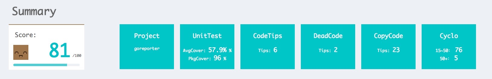
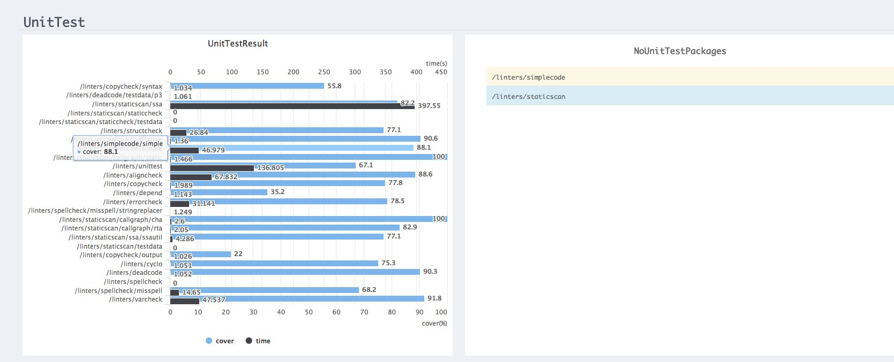
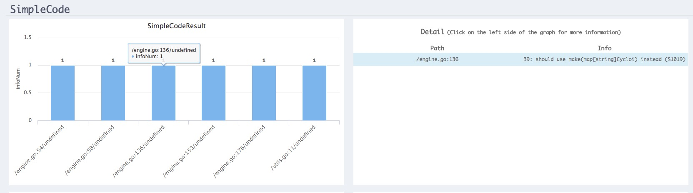

概述
一个项目中除设计之外，代码质量是一个项目成功与健壮的基础，再好的设计但是实现代码混乱，风格混杂，明显性错误百出，我们仍然会认为这是一个失败的项目；相反，即使一个项目在架构和设计上无新奇之处，但代码实现质量高，例如风格统一，测试完善，接口明确，无冗余代码，实现中无明显错误或不安全用法，圈复杂度低等等，无论是对于项目的实现上还是后期代码维护都是有益的。所以，一个项目的代码质量是一个项目成功的关键基础。
C/C++，Java等等语言都有自己的代码质量检测工具，例如Cppcheck，PC-Lint，Splint等等，Golang语言出现时间不实很长，这方面的生态还不是非常完善，当然，对golang比较关注的同学应该听说过——gometalinter，一个golang代码检测的工具，它合并了多种检测工具，相当于很多工具的集合，不过仍然需要安装所有要使用的一系列工具。但是，使用起来很不方便，并且生成的结果也很不直观。不过有另外一个库——goreporter，这个库使用起来非常容易，无任何其他依赖，只需要下载编译（go1.6＋）即可，生成的报告是一个html文件，结果非常直观，并且为你的项目质量进行了评分。
使用示例
在线展示评估概览
包括项目评估得分，项目名称，单元测试覆盖率和package含有单元测试的覆盖率，代码可简化提示，代码冗余以及高圈复杂度提示。
单元测试详细
其中左边是测试详细主要包含两个指标，代码覆盖率和测试耗时；右边是没有单元测试的package。 （鼠标放在相应的package会显示出该package的结果）
可精简代码
显示可以精简的package和该package下具体哪一行可以优化，并且给出了优化方法。
